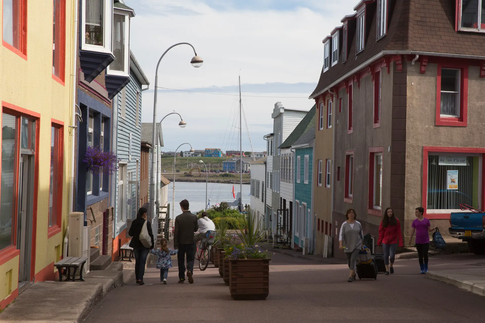
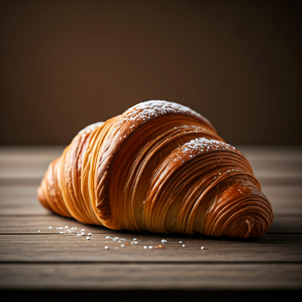
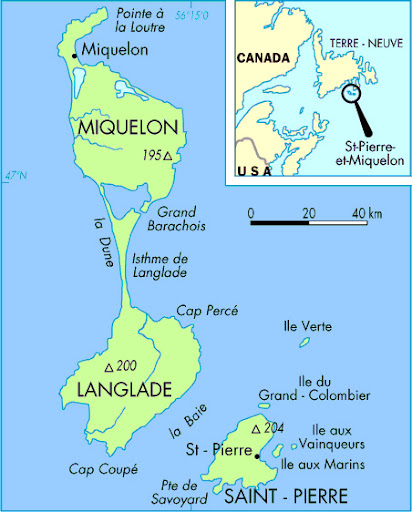
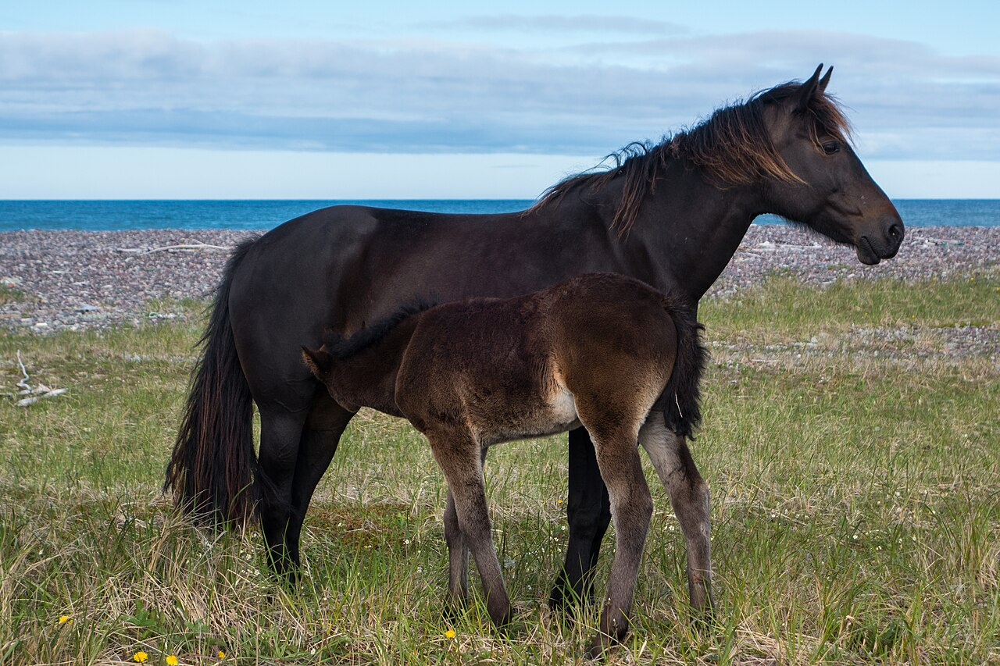

A Taste of France
in the Atlantic
"Imagine stepping off a boat and finding fresh baguettes, French flags flying high, and cobblestone streets—all just 25 kilometers away from the Newfoundland coast."


Petit DéjeunerExplore the Archipelago
Unique History
Once a hub for cod fishing and even a hideout during Prohibition! It's the only territory in North America that remains under French control today.
Le Tricolore
The islands are officially an overseas collectivity of France. They use the Euro and speak French!
Proximity Check
Just a 90-minute ferry ride from Fortune, NL.


Wild Miquelon
Tap to learn about the Miquelon horse!
French Flavours
Experience the French 'art de vivre' with boulangeries, patisseries, and the annual Bastille Day celebrations on July 14th.
Did you know?
The history of these islands is exceptional: after Jacques Cartier took possession of them in 1536, this territory only became definitively French in 1816. Populated by French from Normandy, Brittany and the Basque Country, as well as Acadians settled in Miquelon, this archipelago keeps many traces of its past: come and discover the history of the Great Fishing, Prohibition and smuggling, human adventures that have punctuated its history, since the Amerindians 5000 years ago.